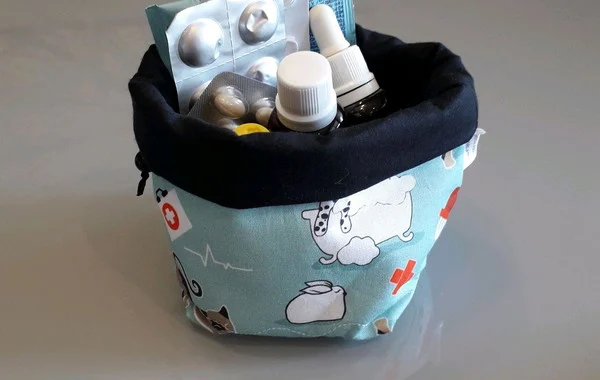
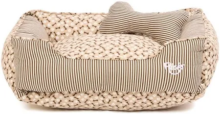
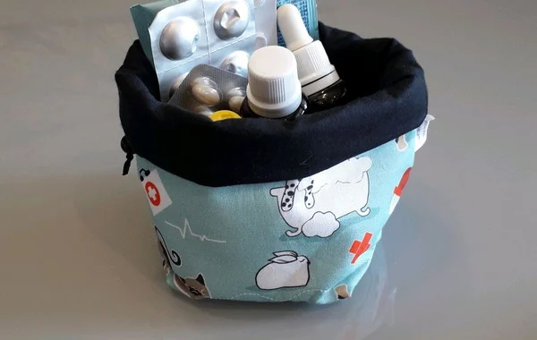
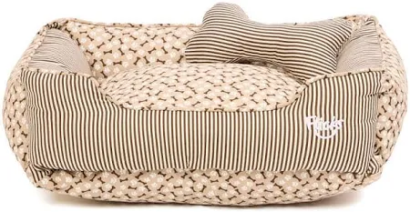

Como ajudar e o que pode ser doado:
Apoio Financeiro: Contribuições em dinheiro auxiliam no pagamento de tratamentos veterinários, alimentação e despesas operacionais.
Alimentos: Ração para cães e gatos é sempre necessária.
Remédios e suprimentos veterinários: Produtos como vermífugos, antiparasitários e materiais de primeiros socorros são indispensáveis.
Outros itens: Jornais, produtos de higiene e acessórios para pets (coleiras, camas, entre outros) são muito bem apreciados.
 


